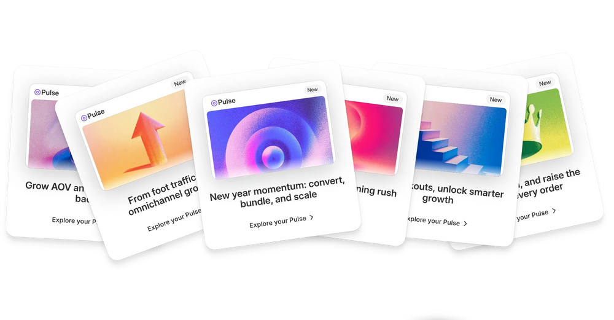
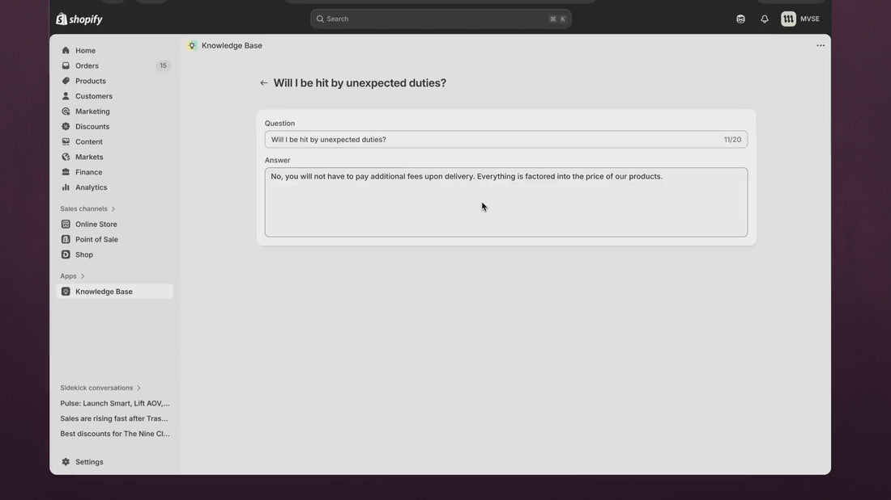

Smart suggestions
Personalized recommendations and next steps, drawn from the signals already in your data.

Every page begins with a single letter that is larger than the rest. Replace this line with your own sentence and keep the first character intact.
Personalized recommendations and next steps, drawn from the signals already in your data.

This band uses #dcdcd0, never pure white or black.
